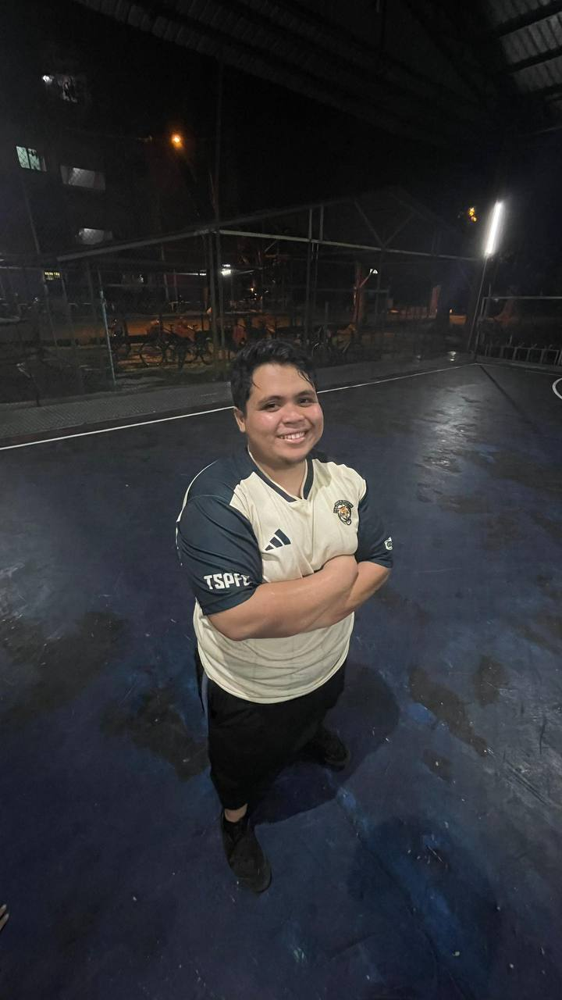

|

|
|
Abang ˶ᵔ ᵕ ᵔ˶
My brother, a budding master of science, is more than just an academic prodigy. He's the knight in shining armor who treats me like a princess, showering me with affection and indulging my every whim. He's the one who knows how to mend my broken heart with a witty joke and a reassuring hug, whisking me away on impromptu adventures whenever I need a distraction.
Though his playful teasing borders on annoyance, it's always laced with brotherly love. He'd readily climb the highest mountain or walk through fire to see me smile. His fiancee, a reflection of his own kindness and beauty, is destined to be a wonderful addition to our family.
He may not be perfect, but his imperfections add to his charm. He's my confidante, my protector, and my biggest cheerleader. In him, I find unwavering support, unconditional love, and an endless source of amusement. He's my brother, and I wouldn't trade him for the world, even with the occasional dose of sibling annoyance.